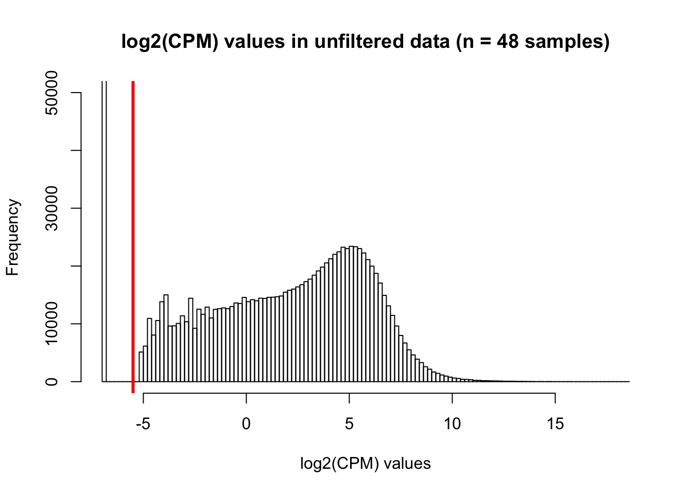
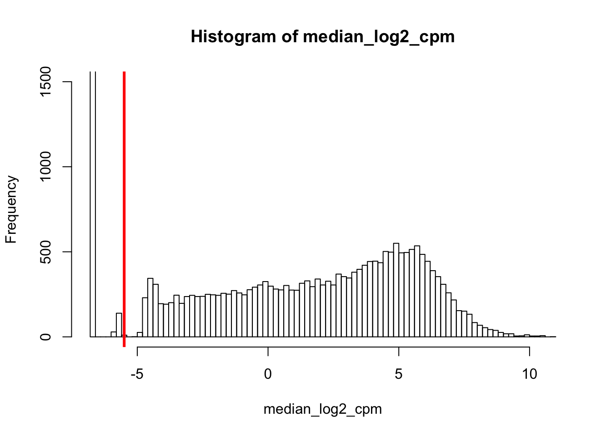
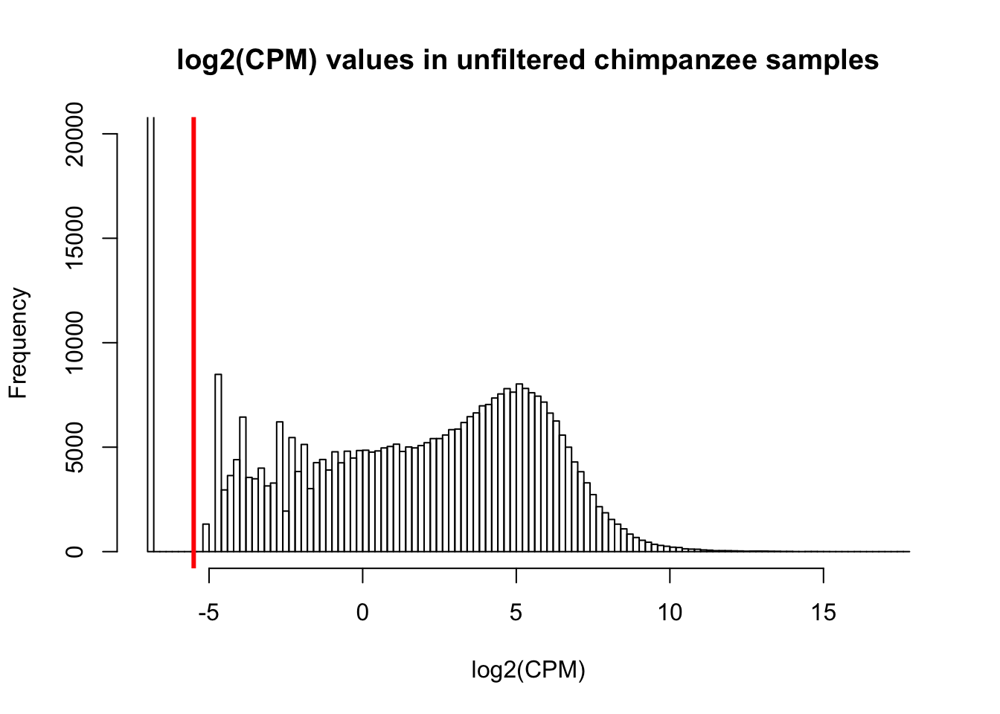
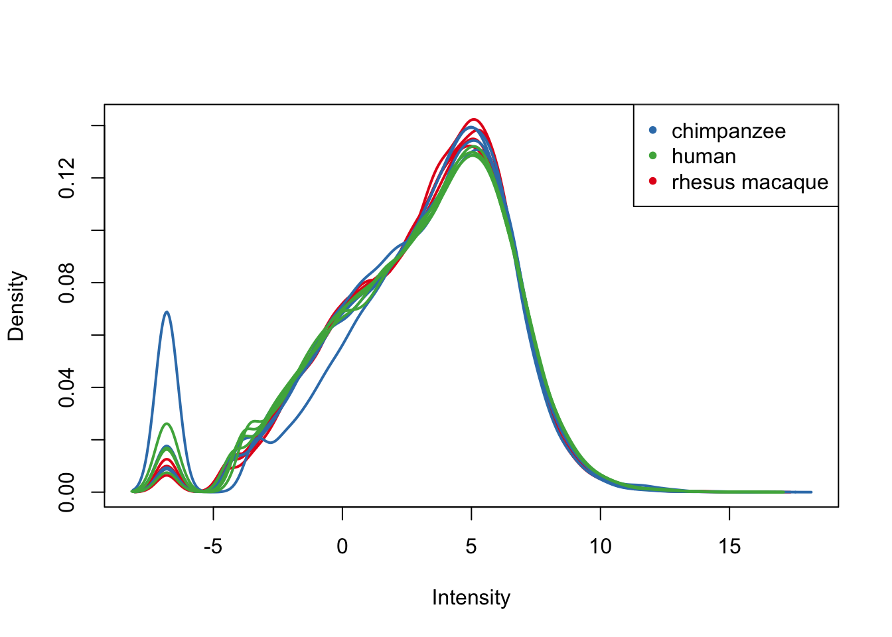
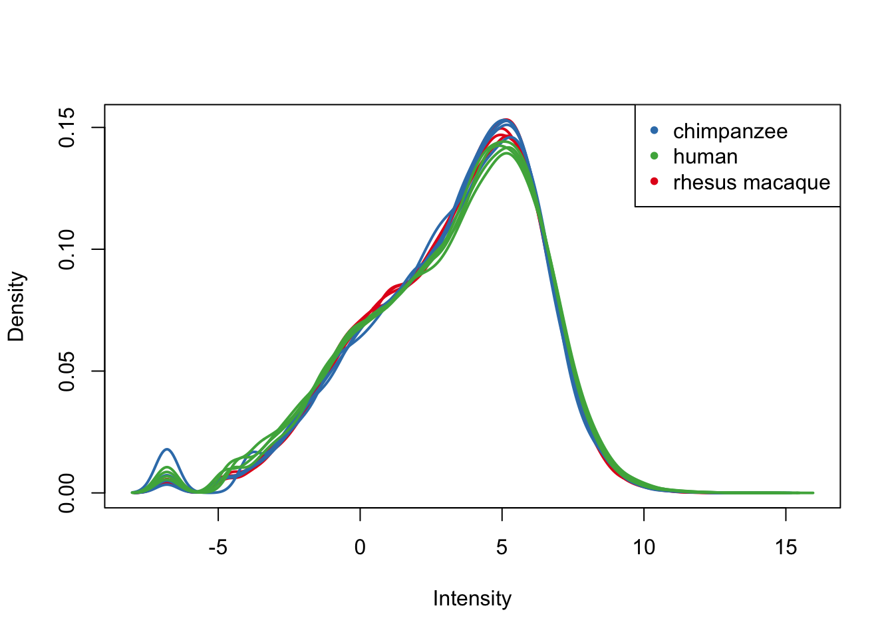
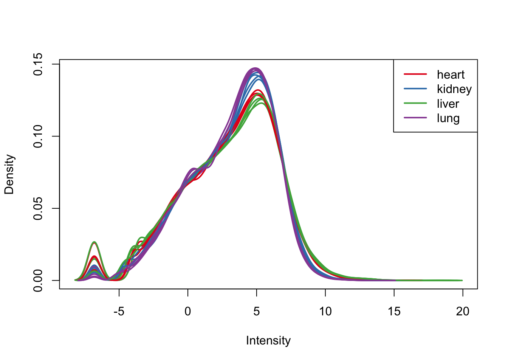

Filtering_analysis
Lauren Blake
June 10, 2016
- The goal of this file is to establish filtering criteria for multispecies RNA-seq data. This analysis is exploratory; our final scheme can be found in the beginning of the GC content normalization file.
- Introduction
- Patterns of log2(CPM)
- Patterns of log2(CPM) for each species
- Filtering 1: log2(CPM) > 1 in at least 4 samples (filtering scheme proposed by Julien)
- Different log2(cpm) thresholds (1 to 48 samples required)
- Filtering 2: Log2(CPM) > a particular threshold adjusted for library size in 4/4 samples, 3/4 samples, and 2/4 samples per tissue-species pair.
- Distribution of NAs/0 counts
- Density plots of gene counts when we require 2/4 samples in each tissue-species pair to have log2(CPM) > -5.5
The goal of this file is to establish filtering criteria for multispecies RNA-seq data. This analysis is exploratory; our final scheme can be found in the beginning of the GC content normalization file.
Introduction
There are the main considerations for filtering:
What to filter (raw counts or CPM). Our lab frequently uses CPM in human RNA-seq and multi-species RNA-seq data (e.g. Gallego Romero and Pavlovic et al. 2015).
What threshold(s) to filter at e.g. how many samples, tissues, and/or species should have a present value in order to include the gene in the later analysis. For example, Julien had used the cut-off of log2(cpm > 1) in at least 4 of the samples for each gene. This is a potentially lax cutoff and may lead to us having lots of missing data when we perform the differential expression analysis. We have 12 tissue-species pairs. Therefore, we will evaluate the performance of 2/4, 3/4, and 4/4 samples in all 12 tissue-species pairs.
Note: After this preliminary exploration, we SNP calling (via GATK) that the sample Human 1 Heart is Human 1 but most likely a Human 1 Liver. Therefore, in future analyses, we will drop this sample.
# Load libraries
library("gplots")## Warning: package 'gplots' was built under R version 3.1.3##
## Attaching package: 'gplots'
##
## The following object is masked from 'package:stats':
##
## lowesslibrary("ggplot2")## Warning: package 'ggplot2' was built under R version 3.1.3library("RColorBrewer")
library("scales")
library("edgeR")## Loading required package: limma## Warning: package 'limma' was built under R version 3.1.3library("R.utils")## Warning: package 'R.utils' was built under R version 3.1.3## Loading required package: R.oo## Warning: package 'R.oo' was built under R version 3.1.3## Loading required package: R.methodsS3
## R.methodsS3 v1.7.0 (2015-02-19) successfully loaded. See ?R.methodsS3 for help.
## R.oo v1.19.0 (2015-02-27) successfully loaded. See ?R.oo for help.
##
## Attaching package: 'R.oo'
##
## The following objects are masked from 'package:methods':
##
## getClasses, getMethods
##
## The following objects are masked from 'package:base':
##
## attach, detach, gc, load, save
##
## R.utils v2.0.2 (2015-04-27) successfully loaded. See ?R.utils for help.
##
## Attaching package: 'R.utils'
##
## The following object is masked from 'package:utils':
##
## timestamp
##
## The following objects are masked from 'package:base':
##
## cat, commandArgs, getOption, inherits, isOpen, parse, warningslibrary("plyr")## Warning: package 'plyr' was built under R version 3.1.3library("limma")
library("statmod")## Warning: package 'statmod' was built under R version 3.1.3library("EDASeq")## Loading required package: Biobase
## Loading required package: BiocGenerics
## Loading required package: parallel
##
## Attaching package: 'BiocGenerics'
##
## The following objects are masked from 'package:parallel':
##
## clusterApply, clusterApplyLB, clusterCall, clusterEvalQ,
## clusterExport, clusterMap, parApply, parCapply, parLapply,
## parLapplyLB, parRapply, parSapply, parSapplyLB
##
## The following object is masked from 'package:limma':
##
## plotMA
##
## The following object is masked from 'package:stats':
##
## xtabs
##
## The following objects are masked from 'package:base':
##
## anyDuplicated, append, as.data.frame, as.vector, cbind,
## colnames, do.call, duplicated, eval, evalq, Filter, Find, get,
## intersect, is.unsorted, lapply, Map, mapply, match, mget,
## order, paste, pmax, pmax.int, pmin, pmin.int, Position, rank,
## rbind, Reduce, rep.int, rownames, sapply, setdiff, sort,
## table, tapply, union, unique, unlist, unsplit
##
## Welcome to Bioconductor
##
## Vignettes contain introductory material; view with
## 'browseVignettes()'. To cite Bioconductor, see
## 'citation("Biobase")', and for packages 'citation("pkgname")'.
##
## Loading required package: ShortRead
## Loading required package: BiocParallel
## Loading required package: Biostrings
## Loading required package: S4Vectors
## Loading required package: stats4
##
## Attaching package: 'S4Vectors'
##
## The following object is masked from 'package:plyr':
##
## rename
##
## Loading required package: IRanges
##
## Attaching package: 'IRanges'
##
## The following object is masked from 'package:plyr':
##
## desc
##
## The following object is masked from 'package:R.oo':
##
## trim
##
## The following object is masked from 'package:gplots':
##
## space
##
## Loading required package: XVector
##
## Attaching package: 'XVector'
##
## The following object is masked from 'package:plyr':
##
## compact
##
## Loading required package: Rsamtools
## Loading required package: GenomeInfoDb## Warning: package 'GenomeInfoDb' was built under R version 3.1.3## Loading required package: GenomicRanges
## Loading required package: GenomicAlignments
##
## Attaching package: 'ShortRead'
##
## The following object is masked from 'package:plyr':
##
## id
##
## The following object is masked from 'package:R.utils':
##
## countLinessource("~/Reg_Evo_Primates/ashlar-trial/analysis/functions.R")
# Load colors
colors <- colorRampPalette(c(brewer.pal(9, "Blues")[1],brewer.pal(9, "Blues")[9]))(100)
pal <- c(brewer.pal(9, "Set1"), brewer.pal(8, "Set2"), brewer.pal(12, "Set3"))
#Load the data
#Raw counts
counts_genes <- read.delim("~/Reg_Evo_Primates/ashlar-trial/data/counts_genes.txt")
summary(counts_genes)## C1H C1K C1Li
## Min. : 0.0 Min. : 0.0 Min. : 0
## 1st Qu.: 0.0 1st Qu.: 0.0 1st Qu.: 0
## Median : 24.0 Median : 36.0 Median : 18
## Mean : 908.2 Mean : 968.3 Mean : 1075
## 3rd Qu.: 490.0 3rd Qu.: 695.0 3rd Qu.: 397
## Max. :821596.0 Max. :346199.0 Max. :4072604
## C1Lu C2H C2K
## Min. : 0.0 Min. : 0.0 Min. : 0.0
## 1st Qu.: 0.0 1st Qu.: 0.0 1st Qu.: 0.0
## Median : 27.0 Median : 17.0 Median : 35.0
## Mean : 874.5 Mean : 808.7 Mean : 820.0
## 3rd Qu.: 598.0 3rd Qu.: 370.0 3rd Qu.: 634.8
## Max. :660655.0 Max. :831150.0 Max. :271404.0
## C2Li C2Lu C3H C3K
## Min. : 0 Min. : 0 Min. : 0 Min. : 0.0
## 1st Qu.: 0 1st Qu.: 0 1st Qu.: 0 1st Qu.: 0.0
## Median : 16 Median : 44 Median : 19 Median : 37.0
## Mean : 1178 Mean : 1219 Mean : 1013 Mean : 883.5
## 3rd Qu.: 405 3rd Qu.: 875 3rd Qu.: 441 3rd Qu.: 672.0
## Max. :3938717 Max. :716724 Max. :1793508 Max. :215725.0
## C3Li C3Lu C4H
## Min. : 0.0 Min. : 0.0 Min. : 0.0
## 1st Qu.: 0.0 1st Qu.: 0.0 1st Qu.: 0.0
## Median : 10.0 Median : 29.0 Median : 20.0
## Mean : 853.2 Mean : 803.7 Mean : 874.4
## 3rd Qu.: 267.0 3rd Qu.: 561.0 3rd Qu.: 445.0
## Max. :1945405.0 Max. :510429.0 Max. :698234.0
## C4K C4Li C4Lu
## Min. : 0.0 Min. : 0.0 Min. : 0.0
## 1st Qu.: 0.0 1st Qu.: 0.0 1st Qu.: 0.0
## Median : 29.0 Median : 10.0 Median : 35.0
## Mean : 758.1 Mean : 791.6 Mean : 898.2
## 3rd Qu.: 544.0 3rd Qu.: 256.0 3rd Qu.: 628.0
## Max. :326106.0 Max. :3072954.0 Max. :219491.0
## H1H H1K H1Li
## Min. : 0.0 Min. : 0.0 Min. : 0
## 1st Qu.: 0.0 1st Qu.: 0.0 1st Qu.: 0
## Median : 17.0 Median : 37.0 Median : 18
## Mean : 995.8 Mean : 915.4 Mean : 1081
## 3rd Qu.: 383.0 3rd Qu.: 698.0 3rd Qu.: 408
## Max. :2680362.0 Max. :280407.0 Max. :2947309
## H1Lu H2H H2K
## Min. : 0.0 Min. : 0.0 Min. : 0.0
## 1st Qu.: 0.0 1st Qu.: 0.0 1st Qu.: 0.0
## Median : 31.0 Median : 11.0 Median : 14.0
## Mean : 727.1 Mean : 593.3 Mean : 411.5
## 3rd Qu.: 522.0 3rd Qu.: 301.0 3rd Qu.: 300.0
## Max. :229142.0 Max. :369787.0 Max. :263771.0
## H2Li H2Lu H3H H3K
## Min. : 0.0 Min. : 0 Min. : 0.0 Min. : 0.0
## 1st Qu.: 0.0 1st Qu.: 0 1st Qu.: 0.0 1st Qu.: 0.0
## Median : 15.0 Median : 36 Median : 7.0 Median : 38.0
## Mean : 690.9 Mean : 1044 Mean : 364.3 Mean : 926.1
## 3rd Qu.: 361.0 3rd Qu.: 700 3rd Qu.: 193.0 3rd Qu.: 702.0
## Max. :741758.0 Max. :234018 Max. :507382.0 Max. :470291.0
## H3Li H3Lu H4H
## Min. : 0.0 Min. : 0 Min. : 0.0
## 1st Qu.: 0.0 1st Qu.: 0 1st Qu.: 0.0
## Median : 10.0 Median : 41 Median : 19.0
## Mean : 644.1 Mean : 1046 Mean : 882.4
## 3rd Qu.: 249.0 3rd Qu.: 680 3rd Qu.: 434.0
## Max. :2281606.0 Max. :451746 Max. :992300.0
## H4K H4Li H4Lu
## Min. : 0.0 Min. : 0.0 Min. : 0.0
## 1st Qu.: 0.0 1st Qu.: 0.0 1st Qu.: 0.0
## Median : 38.0 Median : 17.0 Median : 54.0
## Mean : 969.9 Mean : 723.2 Mean : 1283.5
## 3rd Qu.: 719.8 3rd Qu.: 345.0 3rd Qu.: 905.8
## Max. :612986.0 Max. :1039964.0 Max. :382974.0
## R1H R1K R1Li
## Min. : 0.0 Min. : 0.0 Min. : 0
## 1st Qu.: 0.0 1st Qu.: 0.0 1st Qu.: 0
## Median : 8.0 Median : 18.0 Median : 7
## Mean : 556.8 Mean : 598.5 Mean : 827
## 3rd Qu.: 229.0 3rd Qu.: 420.0 3rd Qu.: 223
## Max. :747635.0 Max. :326973.0 Max. :4326316
## R1Lu R2H R2K R2Li
## Min. : 0.0 Min. : 0.0 Min. : 0 Min. : 0
## 1st Qu.: 0.0 1st Qu.: 0.0 1st Qu.: 0 1st Qu.: 0
## Median : 26.0 Median : 10.0 Median : 24 Median : 12
## Mean : 806.9 Mean : 663.9 Mean : 718 Mean : 1200
## 3rd Qu.: 589.0 3rd Qu.: 276.0 3rd Qu.: 515 3rd Qu.: 342
## Max. :643878.0 Max. :895632.0 Max. :358835 Max. :6121420
## R2Lu R3H R3K R3Li
## Min. : 0.0 Min. : 0 Min. : 0.0 Min. : 0
## 1st Qu.: 0.0 1st Qu.: 0 1st Qu.: 0.0 1st Qu.: 0
## Median : 39.0 Median : 16 Median : 22.0 Median : 11
## Mean : 977.8 Mean : 945 Mean : 824.6 Mean : 1259
## 3rd Qu.: 739.0 3rd Qu.: 397 3rd Qu.: 526.0 3rd Qu.: 337
## Max. :404563.0 Max. :1252730 Max. :792396.0 Max. :7576265
## R3Lu R4H R4K R4Li
## Min. : 0 Min. : 0.0 Min. : 0 Min. : 0
## 1st Qu.: 0 1st Qu.: 0.0 1st Qu.: 0 1st Qu.: 0
## Median : 42 Median : 11.0 Median : 29 Median : 20
## Mean : 1172 Mean : 730.9 Mean : 1001 Mean : 1753
## 3rd Qu.: 875 3rd Qu.: 305.0 3rd Qu.: 665 3rd Qu.: 558
## Max. :583471 Max. :933376.0 Max. :714614 Max. :7642934
## R4Lu
## Min. : 0.0
## 1st Qu.: 0.0
## Median : 39.0
## Mean : 1215.1
## 3rd Qu.: 884.8
## Max. :768328.0 #Sample information
samples <- read.csv("~/Reg_Evo_Primates/ashlar-trial/data/Sample_info_RNAseq.csv")
labels <- paste(samples$Species, samples$Tissue, sep=" ")
dim(counts_genes)## [1] 30030 48Patterns of log2(CPM)
We are beginning with 30030 genes and 48 samples. Let’s do some preliminary analysis on the log2(CPM) to determine an appropriate cutoff
# log2(CPM) adjusted for library sizes
dge_original <- DGEList(counts=as.matrix(counts_genes), genes=rownames(counts_genes), group = as.character(t(labels)))
dge_original <- calcNormFactors(dge_original)
expr_cutoff <- -5.5
tmm_cpm <- cpm(dge_original, normalized.lib.sizes=TRUE, log=TRUE, prior.count = 0.25)
head(tmm_cpm)## C1H C1K C1Li C1Lu C2H C2K
## ENSG00000000003 4.567373 6.447533 8.256017 5.424906 4.6294354 6.011805
## ENSG00000000005 2.416000 -1.580095 -1.416352 -3.341347 0.6076502 -1.343658
## ENSG00000000419 5.840304 5.181024 5.932747 5.421890 5.6238128 5.035649
## ENSG00000000457 4.558401 5.177784 5.897776 4.915903 4.7768304 5.224658
## ENSG00000000460 1.505008 1.832930 2.075455 2.252356 1.6034149 1.903546
## ENSG00000000938 5.610063 3.782664 5.086430 7.494062 2.4759548 4.113386
## C2Li C2Lu C3H C3K C3Li
## ENSG00000000003 7.997439 4.518180 4.896187 6.34935971 7.711220
## ENSG00000000005 -2.074003 -2.073564 -1.336243 -0.08391333 -3.805819
## ENSG00000000419 5.781412 5.153538 5.656791 5.12246958 6.340540
## ENSG00000000457 6.513238 4.939606 4.599465 5.14729901 6.424910
## ENSG00000000460 2.292856 1.977228 1.561216 1.40473716 2.271103
## ENSG00000000938 5.356426 8.037124 4.945957 4.16655579 5.131295
## C3Lu C4H C4K C4Li C4Lu H1H
## ENSG00000000003 5.825590 4.200148 6.445727 8.368230 5.362211 6.761084
## ENSG00000000005 -3.821423 3.812407 -1.533431 -3.682999 -2.532144 -6.806579
## ENSG00000000419 5.546317 5.749810 5.199950 5.796045 5.253771 6.134200
## ENSG00000000457 5.118596 4.609688 4.965236 6.512006 5.195795 5.269211
## ENSG00000000460 2.074325 1.421009 1.768841 2.121422 2.408692 5.108993
## ENSG00000000938 7.109951 3.603345 3.563260 4.494896 7.649746 4.442136
## H1K H1Li H1Lu H2H H2K H2Li
## ENSG00000000003 6.804563 6.546031 5.007223 3.704707 7.1262303 6.618244
## ENSG00000000005 4.852944 -6.806579 -2.246586 -3.903089 0.3878291 -6.806579
## ENSG00000000419 5.528057 6.052945 5.719069 5.629978 5.3823470 5.817742
## ENSG00000000457 4.224917 4.923772 4.410342 3.430292 4.0791476 4.430133
## ENSG00000000460 2.706694 4.959282 3.226274 1.915724 1.8992527 2.637193
## ENSG00000000938 3.999256 4.449888 7.786373 5.583692 3.6609998 5.969598
## H2Lu H3H H3K H3Li H3Lu
## ENSG00000000003 4.123641 3.4819522 7.018616442 7.646317 5.182205
## ENSG00000000005 -6.806579 -6.8065788 0.009014279 -6.806579 -6.806579
## ENSG00000000419 5.255982 5.6892431 5.781990575 6.127195 4.901956
## ENSG00000000457 4.144389 4.3789705 4.649846700 4.904103 3.891301
## ENSG00000000460 2.495636 -0.1372257 2.917685496 3.148170 2.349467
## ENSG00000000938 6.911422 4.0351829 2.570227284 5.651445 6.804843
## H4H H4K H4Li H4Lu R1H
## ENSG00000000003 4.298917 6.3173589 6.492465 4.430781 4.277450
## ENSG00000000005 -2.885525 -0.4099302 -6.806579 -4.381165 -6.806579
## ENSG00000000419 6.259288 5.5536660 5.736507 5.317749 5.385154
## ENSG00000000457 3.327086 4.0330630 5.078478 4.140972 4.206293
## ENSG00000000460 1.644565 1.9287495 3.040136 2.571756 1.205569
## ENSG00000000938 4.933243 3.7664364 6.801466 8.216330 1.758374
## R1K R1Li R1Lu R2H R2K
## ENSG00000000003 6.865893 8.2379489 5.862719 4.587429 7.080213
## ENSG00000000005 -6.806579 -3.5812300 -2.947388 -2.950144 -2.392446
## ENSG00000000419 5.324798 5.7295743 4.834230 5.257598 4.989863
## ENSG00000000457 4.957819 5.0471784 4.784547 4.273744 5.100864
## ENSG00000000460 1.488300 -0.2693252 2.427739 1.377881 1.266081
## ENSG00000000938 2.497210 3.7078234 6.462495 2.289137 2.627796
## R2Li R2Lu R3H R3K R3Li
## ENSG00000000003 8.590210 5.596179 4.447299 7.118296 8.159964
## ENSG00000000005 -1.254679 -4.918947 -4.250247 -4.518792 -3.157713
## ENSG00000000419 5.673041 4.822969 5.441223 5.319612 5.947843
## ENSG00000000457 5.461042 5.207134 4.219708 5.092042 5.317075
## ENSG00000000460 1.446891 2.336439 1.634827 1.826680 1.371274
## ENSG00000000938 3.622173 6.524890 2.849036 2.219476 3.593860
## R3Lu R4H R4K R4Li R4Lu
## ENSG00000000003 5.443878 4.822954 7.048140 7.679671 5.347353
## ENSG00000000005 -3.806700 -2.535407 -2.099889 -4.589602 -6.806579
## ENSG00000000419 4.946500 5.357811 5.169441 5.438501 5.027872
## ENSG00000000457 5.155818 4.440126 5.098001 5.292544 4.814466
## ENSG00000000460 2.567598 1.018736 1.463169 1.508474 2.833647
## ENSG00000000938 6.836275 2.405256 2.264315 4.483635 6.820965summary(tmm_cpm)## C1H C1K C1Li C1Lu
## Min. :-6.8066 Min. :-6.80658 Min. :-6.8066 Min. :-6.8066
## 1st Qu.:-6.8066 1st Qu.:-6.80658 1st Qu.:-6.8066 1st Qu.:-6.8066
## Median :-0.1668 Median :-0.02105 Median :-0.2657 Median :-0.2925
## Mean :-0.4855 Mean :-0.37961 Mean :-0.5166 Mean :-0.5432
## 3rd Qu.: 4.1710 3rd Qu.: 4.23744 3rd Qu.: 4.1825 3rd Qu.: 4.1615
## Max. :14.8817 Max. :13.19713 Max. :17.5064 Max. :14.2703
## C2H C2K C2Li C2Lu
## Min. :-6.8066 Min. :-6.80658 Min. :-6.8066 Min. :-6.8066
## 1st Qu.:-6.8066 1st Qu.:-6.80658 1st Qu.:-6.8066 1st Qu.:-6.8066
## Median :-0.3413 Median : 0.06448 Median :-0.4337 Median :-0.1148
## Mean :-0.6041 Mean :-0.34989 Mean :-0.6045 Mean :-0.4454
## 3rd Qu.: 4.0869 3rd Qu.: 4.23355 3rd Qu.: 4.2112 3rd Qu.: 4.1856
## Max. :15.2195 Max. :12.97290 Max. :17.4581 Max. :13.8628
## C3H C3K C3Li C3Lu
## Min. :-6.8066 Min. :-6.80658 Min. :-6.8066 Min. :-6.8066
## 1st Qu.:-6.8066 1st Qu.:-6.80658 1st Qu.:-6.8066 1st Qu.:-6.8066
## Median :-0.4257 Median : 0.03697 Median :-0.6560 Median :-0.1439
## Mean :-0.6123 Mean :-0.38408 Mean :-0.7881 Mean :-0.4967
## 3rd Qu.: 4.0943 3rd Qu.: 4.20791 3rd Qu.: 4.0631 3rd Qu.: 4.1164
## Max. :16.0833 Max. :12.53374 Max. :16.8933 Max. :13.9451
## C4H C4K C4Li C4Lu
## Min. :-6.8066 Min. :-6.80658 Min. :-6.8066 Min. :-6.80658
## 1st Qu.:-6.8066 1st Qu.:-6.80658 1st Qu.:-6.8066 1st Qu.:-6.80658
## Median :-0.3538 Median :-0.02203 Median :-0.5183 Median :-0.05095
## Mean :-0.5647 Mean :-0.38909 Mean :-0.5270 Mean :-0.42516
## 3rd Qu.: 4.1061 3rd Qu.: 4.19501 3rd Qu.: 4.1419 3rd Qu.: 4.10172
## Max. :14.7210 Max. :13.42183 Max. :17.6924 Max. :12.55015
## H1H H1K H1Li H1Lu
## Min. :-6.8066 Min. :-6.80658 Min. :-6.8066 Min. :-6.80658
## 1st Qu.:-6.8066 1st Qu.:-6.80658 1st Qu.:-6.8066 1st Qu.:-6.80658
## Median :-0.3036 Median :-0.02683 Median :-0.3044 Median : 0.07246
## Mean :-0.5711 Mean :-0.46538 Mean :-0.6263 Mean :-0.43814
## 3rd Qu.: 4.1748 3rd Qu.: 4.19831 3rd Qu.: 4.1829 3rd Qu.: 4.13460
## Max. :16.9469 Max. :12.84769 Max. :17.0007 Max. :12.91184
## H2H H2K H2Li H2Lu
## Min. :-6.8066 Min. :-6.8066 Min. :-6.8066 Min. :-6.8066
## 1st Qu.:-6.8066 1st Qu.:-6.8066 1st Qu.:-6.8066 1st Qu.:-6.8066
## Median :-0.6305 Median :-0.2586 Median :-0.4404 Median :-0.1235
## Mean :-0.7319 Mean :-0.6168 Mean :-0.6699 Mean :-0.5198
## 3rd Qu.: 4.1243 3rd Qu.: 4.1481 3rd Qu.: 4.1317 3rd Qu.: 4.1444
## Max. :14.3863 Max. :13.9274 Max. :15.1357 Max. :12.5287
## H3H H3K H3Li H3Lu
## Min. :-6.8066 Min. :-6.80658 Min. :-6.8066 Min. :-6.80658
## 1st Qu.:-6.8066 1st Qu.:-6.80658 1st Qu.:-6.8066 1st Qu.:-6.80658
## Median :-0.6457 Median : 0.04715 Median :-0.5239 Median : 0.07294
## Mean :-1.0322 Mean :-0.39018 Mean :-0.7400 Mean :-0.38224
## 3rd Qu.: 4.1198 3rd Qu.: 4.24270 3rd Qu.: 4.0962 3rd Qu.: 4.11322
## Max. :15.4793 Max. :13.62989 Max. :17.2571 Max. :13.48823
## H4H H4K H4Li H4Lu
## Min. :-6.8066 Min. :-6.80658 Min. :-6.8066 Min. :-6.80658
## 1st Qu.:-6.8066 1st Qu.:-6.80658 1st Qu.:-6.8066 1st Qu.:-6.80658
## Median :-0.3051 Median : 0.02613 Median :-0.1989 Median : 0.08872
## Mean :-0.5866 Mean :-0.37704 Mean :-0.5401 Mean :-0.35612
## 3rd Qu.: 4.1932 3rd Qu.: 4.25751 3rd Qu.: 4.1299 3rd Qu.: 4.14536
## Max. :15.3514 Max. :13.99098 Max. :15.6868 Max. :12.86855
## R1H R1K R1Li R1Lu
## Min. :-6.8066 Min. :-6.8066 Min. :-6.8066 Min. :-6.8066
## 1st Qu.:-6.8066 1st Qu.:-6.8066 1st Qu.:-6.8066 1st Qu.:-6.8066
## Median :-0.7778 Median :-0.3301 Median :-0.9126 Median :-0.3336
## Mean :-0.8583 Mean :-0.5809 Mean :-0.8764 Mean :-0.6205
## 3rd Qu.: 4.0400 3rd Qu.: 4.1986 3rd Qu.: 4.0573 3rd Qu.: 4.1525
## Max. :15.7119 Max. :13.8025 Max. :18.3003 Max. :14.2460
## R2H R2K R2Li R2Lu
## Min. :-6.8066 Min. :-6.8066 Min. :-6.8066 Min. :-6.80658
## 1st Qu.:-6.8066 1st Qu.:-6.8066 1st Qu.:-6.8066 1st Qu.:-6.80658
## Median :-0.7102 Median :-0.1840 Median :-0.6800 Median :-0.07444
## Mean :-0.8031 Mean :-0.5329 Mean :-0.7485 Mean :-0.46127
## 3rd Qu.: 4.0559 3rd Qu.: 4.2254 3rd Qu.: 4.1328 3rd Qu.: 4.15668
## Max. :15.7192 Max. :13.6693 Max. :18.2597 Max. :13.25253
## R3H R3K R3Li R3Lu
## Min. :-6.8066 Min. :-6.8066 Min. :-6.8066 Min. :-6.8066
## 1st Qu.:-6.8066 1st Qu.:-6.8066 1st Qu.:-6.8066 1st Qu.:-6.8066
## Median :-0.5007 Median :-0.3732 Median :-0.7956 Median :-0.1774
## Mean :-0.6713 Mean :-0.5759 Mean :-0.7608 Mean :-0.4956
## 3rd Qu.: 4.1147 3rd Qu.: 4.1902 3rd Qu.: 4.1198 3rd Qu.: 4.1895
## Max. :15.7376 Max. :14.7465 Max. :18.5755 Max. :13.5700
## R4H R4K R4Li R4Lu
## Min. :-6.8066 Min. :-6.8066 Min. :-6.8066 Min. :-6.8066
## 1st Qu.:-6.8066 1st Qu.:-6.8066 1st Qu.:-6.8066 1st Qu.:-6.8066
## Median :-0.7163 Median :-0.2825 Median :-0.5974 Median :-0.3014
## Mean :-0.7790 Mean :-0.5327 Mean :-0.6591 Mean :-0.5554
## 3rd Qu.: 4.0563 3rd Qu.: 4.2217 3rd Qu.: 4.1858 3rd Qu.: 4.1870
## Max. :15.6350 Max. :14.2906 Max. :17.9267 Max. :13.9486hist(tmm_cpm, main = "log2(CPM) values in unfiltered data (n = 48 samples)", breaks = 100, ylim = c(0, 50000), xlab = "log2(CPM) values")
abline(v = expr_cutoff, col = "red", lwd = 3)
# Median log(CPM) adjusted for library sizes
cpm_log <- cpm(counts_genes, normalized.lib.sizes=TRUE, log = TRUE, prior.count = 0.25)
median_log2_cpm <- apply(cpm_log, 1, median)
hist(median_log2_cpm, breaks = 100, ylim = c(0, 1500))
abline(v = expr_cutoff, col = "red", lwd = 3)
These plots are very similar.
Patterns of log2(CPM) for each species
# Looking at chimpanzees
hist(tmm_cpm[,1], main = "log2(CPM) values in unfiltered data (chimpanzee heart sample 1)", xlab = "log2(CPM)", breaks = 100, ylim = c(0, 5000))
abline(v = expr_cutoff, col = "red", lwd = 3)
hist(tmm_cpm[,1:16], main = "log2(CPM) values in unfiltered chimpanzee samples", breaks = 100, xlab = "log2(CPM)", ylim = c(0, 20000))
abline(v = expr_cutoff, col = "red", lwd = 3)
# Looking at humans
hist(tmm_cpm[,17], main = "log2(CPM) values in unfiltered data (human heart sample 1)", xlab = "log2(CPM)", breaks = 100, ylim = c(0, 5000))
abline(v = expr_cutoff, col = "red", lwd = 3)
hist(tmm_cpm[,17:32], main = "log2(CPM) values in unfiltered data (all human samples)", xlab = "log2(CPM)", breaks = 100, ylim = c(0, 20000))
abline(v = expr_cutoff, col = "red", lwd = 3)
# Rhesus macaques
# Looking at chimpanzees
hist(tmm_cpm[,33], main = "log2(CPM) values in unfiltered rhesus macaque heart sample 1", xlab = "log2(CPM)", breaks = 100, ylim = c(0, 5000))
abline(v = expr_cutoff, col = "red", lwd = 3)
hist(tmm_cpm[,33:48], main = "log2(CPM) vallues in rhesus macaque samples", xlab = "log2(CPM)", breaks = 100, ylim = c(0, 20000))
abline(v = expr_cutoff, col = "red", lwd = 3)
Filtering 1: log2(CPM) > 1 in at least 4 samples (filtering scheme proposed by Julien)
What happens when we require keeping only those that have log2(CPM) > 1 in at least 4 samples?
cpm <- cpm(dge_original, normalized.lib.sizes=TRUE, log=TRUE, prior.count=0.25)
cpm_filtered <- cpm[rowSums(cpm > 1) >= 4, ]
dim(cpm_filtered)## [1] 16934 48This leaves us with 15,487 genes.
Different log2(cpm) thresholds (1 to 48 samples required)
#Find number of genes for each sample threshold
filtered_genes <- array(1:48, dim = (c(48,1)))
for (i in 1:48){
cpm_filtered <- cpm[rowSums(cpm > 1) >= i, ]
filter_genes <- as.data.frame(dim(cpm_filtered))
filtered_genes[i, 1] <- filter_genes[1,]
}
# Plot the results
plot(filtered_genes, pch = 16, xlab = "Number of samples required to have log2(cpm) > 1", ylab = "Number of genes", main = "Genes for each sample threshold")
There are 8916 genes when we require log2(cpm) > 1 in all 48 samples.
Filtering 2: Log2(CPM) > a particular threshold adjusted for library size in 4/4 samples, 3/4 samples, and 2/4 samples per tissue-species pair.
# Assign all 12 tissue-species pairs
chimp_hearts <- c(1, 5, 9, 13)
chimp_kidneys <- c(2,6,10,14)
chimp_livers <- c(3,7,11,15)
chimp_lungs <- c(4,8,12,16)
human_hearts <- c(17,21,25,29)
human_kidneys <- c(18,22,26,30)
human_livers <- c(19,23,27,31)
human_lungs <- c(20,24,28,32)
rhesus_hearts <- c(33,37,41,45)
rhesus_kidneys <- c(34,38,42,46)
rhesus_livers <- c(35,39,43,47)
rhesus_lungs <- c(36,40,44,48)
# Save the counts
# Raw counts = log2(counts_genes)
# CPM = tmm_cpm
counts_genes_filtered_3 <- tmm_cpm
# Put the number of samples that you want to have for every tissue-species pair (count/4 samples)
count = 2
threshold = -5.5
counts_genes_filtered_3A <- counts_genes_filtered_3[rowSums(counts_genes_filtered_3[, chimp_hearts] >= threshold) >= count, ]
#dim(counts_genes_filtered_3A)
counts_genes_filtered_3B <- counts_genes_filtered_3A[rowSums(counts_genes_filtered_3A[, chimp_kidneys] >= threshold) >= count, ]
dim(counts_genes_filtered_3B)## [1] 20720 48counts_genes_filtered_3C <- counts_genes_filtered_3B[rowSums(counts_genes_filtered_3B[, chimp_livers] >= threshold) >= count, ]
dim(counts_genes_filtered_3C)## [1] 19678 48counts_genes_filtered_3D <- counts_genes_filtered_3C[rowSums(counts_genes_filtered_3C[, chimp_lungs] >= threshold) >= count, ]
dim(counts_genes_filtered_3D)## [1] 19514 48counts_genes_filtered_3E <- counts_genes_filtered_3D[rowSums(counts_genes_filtered_3D[, human_hearts] >= threshold) >= count, ]
dim(counts_genes_filtered_3E)## [1] 18583 48counts_genes_filtered_3F <- counts_genes_filtered_3E[rowSums(counts_genes_filtered_3E[, human_kidneys] >= threshold) >= count, ]
dim(counts_genes_filtered_3F)## [1] 18436 48counts_genes_filtered_3G <- counts_genes_filtered_3F[rowSums(counts_genes_filtered_3F[, human_livers] >= threshold) >= count, ]
dim(counts_genes_filtered_3G)## [1] 18187 48counts_genes_filtered_3H <- counts_genes_filtered_3G[rowSums(counts_genes_filtered_3G[, human_lungs] >= threshold) >= count, ]
dim(counts_genes_filtered_3H)## [1] 18143 48counts_genes_filtered_3I <- counts_genes_filtered_3H[rowSums(counts_genes_filtered_3H[, rhesus_hearts] >= threshold) >= count, ]
dim(counts_genes_filtered_3I)## [1] 17502 48counts_genes_filtered_3J <- counts_genes_filtered_3I[rowSums(counts_genes_filtered_3I[, rhesus_kidneys] >= threshold) >= count, ]
dim(counts_genes_filtered_3J)## [1] 17384 48counts_genes_filtered_3K <- counts_genes_filtered_3J[rowSums(counts_genes_filtered_3J[, rhesus_livers] >= threshold) >= count, ]
dim(counts_genes_filtered_3K)## [1] 17134 48counts_genes_filtered_3L <- counts_genes_filtered_3K[rowSums(counts_genes_filtered_3K[, rhesus_lungs] >= threshold) >= count, ]
dim(counts_genes_filtered_3L)## [1] 17109 48#counts_genes_filtered_3L_sums <- rowSums(counts_genes_filtered_3L)
#hist(counts_genes_filtered_3L_sums, main = "Number of genes remaining (2/4 species-tissue criteria)", xlab = "Number of genes")When we require each sample in each tissue-species pair to have log2(CPM) > -5 in each gene, we have 14,090 genes remaining.
When we require 3/4 samples in each tissue-species pair to have log2(CPM) > -5 in each gene, we have 15,776 genes remaining.
When we require 2/4 samples in each tissue-species pair to have log2(CPM) > -5 in each gene, we have 17,109 genes remaining.
For comparison,
When we require each sample in each tissue-species pair to have log2(CPM) > 0 in each gene, we have 9,803 genes remaining.
When we require 3/4 samples in each tissue-species pair to have log2(CPM) > 0 in each gene, we have 10,579 genes remaining.
When we require 2/4 samples in each tissue-species pair to have log2(CPM) > 0 in each gene, we have 10,157 genes remaining.
Distribution of NAs/0 counts
We can get an idea about the distribution of the missing data (where log2(CPM) > threshold) e.g. if one species or tissue-species pair is over-represented in the missing genes
# Copy the raw counts table
counts_genes_filtered <- tmm_cpm
# If the raw count in a cell is > threshold, replace the counts with a 1
counts_genes_filtered[counts_genes_filtered > threshold ] <- 1
# If the raw count in a cell is =< threshold, replace the counts with a 0
counts_genes_filtered[counts_genes_filtered <= threshold ] <- 0
head(counts_genes_filtered)## C1H C1K C1Li C1Lu C2H C2K C2Li C2Lu C3H C3K C3Li C3Lu C4H
## ENSG00000000003 1 1 1 1 1 1 1 1 1 1 1 1 1
## ENSG00000000005 1 1 1 1 1 1 1 1 1 1 1 1 1
## ENSG00000000419 1 1 1 1 1 1 1 1 1 1 1 1 1
## ENSG00000000457 1 1 1 1 1 1 1 1 1 1 1 1 1
## ENSG00000000460 1 1 1 1 1 1 1 1 1 1 1 1 1
## ENSG00000000938 1 1 1 1 1 1 1 1 1 1 1 1 1
## C4K C4Li C4Lu H1H H1K H1Li H1Lu H2H H2K H2Li H2Lu H3H H3K
## ENSG00000000003 1 1 1 1 1 1 1 1 1 1 1 1 1
## ENSG00000000005 1 1 1 0 1 0 1 1 1 0 0 0 1
## ENSG00000000419 1 1 1 1 1 1 1 1 1 1 1 1 1
## ENSG00000000457 1 1 1 1 1 1 1 1 1 1 1 1 1
## ENSG00000000460 1 1 1 1 1 1 1 1 1 1 1 1 1
## ENSG00000000938 1 1 1 1 1 1 1 1 1 1 1 1 1
## H3Li H3Lu H4H H4K H4Li H4Lu R1H R1K R1Li R1Lu R2H R2K R2Li
## ENSG00000000003 1 1 1 1 1 1 1 1 1 1 1 1 1
## ENSG00000000005 0 0 1 1 0 1 0 0 1 1 1 1 1
## ENSG00000000419 1 1 1 1 1 1 1 1 1 1 1 1 1
## ENSG00000000457 1 1 1 1 1 1 1 1 1 1 1 1 1
## ENSG00000000460 1 1 1 1 1 1 1 1 1 1 1 1 1
## ENSG00000000938 1 1 1 1 1 1 1 1 1 1 1 1 1
## R2Lu R3H R3K R3Li R3Lu R4H R4K R4Li R4Lu
## ENSG00000000003 1 1 1 1 1 1 1 1 1
## ENSG00000000005 1 1 1 1 1 1 1 1 0
## ENSG00000000419 1 1 1 1 1 1 1 1 1
## ENSG00000000457 1 1 1 1 1 1 1 1 1
## ENSG00000000460 1 1 1 1 1 1 1 1 1
## ENSG00000000938 1 1 1 1 1 1 1 1 1# Count the number of genes that have a raw count < 1
x <- 30030 - colSums(counts_genes_filtered)
par(las=1)
plot(x, pch = 16, ylab = "Number of Genes with log2(CPM) < -5", xlab = "Sample name", xaxt = 'n', col = as.factor(samples$Tissue), main = "Number of genes with 0 raw counts/sample")
axis(side = 1, at = 1:48,labels = samples$Species)
legend("topright", c("Heart", "Kidney", "Liver", "Lung"), lwd = c(2,2,2,2), col = c("black", "red", "green", "blue"))
Density plots of gene counts when we require 2/4 samples in each tissue-species pair to have log2(CPM) > -5.5
# Find the original counts of all of the genes that fit the 2/4 criteria and then re-do TMM
inshared_lists = row.names(counts_genes) %in% rownames(counts_genes_filtered_3L)
inshared_lists_data <- as.data.frame(inshared_lists)
counts_genes_in <- cbind(counts_genes, inshared_lists_data)
counts_genes_in_2_of_4 <- subset(counts_genes_in, inshared_lists_data == "TRUE")
counts_genes_in_2_of_4 <- counts_genes_in_2_of_4[,1:48]
# Take the TMM of the genes that meet the criteria of 2/4 in 12 tissue-species pairs
dge_2_in_4 <- DGEList(counts=as.matrix(counts_genes_in_2_of_4), genes=rownames(counts_genes_in_2_of_4), group = as.character(t(labels)))
dge_2_in_4 <- calcNormFactors(dge_2_in_4)
cpm <- cpm(dge_2_in_4, normalized.lib.sizes=TRUE, log=TRUE, prior.count = 0.25)
head(cpm)## C1H C1K C1Li C1Lu C2H C2K
## ENSG00000000003 4.563449 6.438719 8.212431 5.488075 4.665548 6.008089
## ENSG00000000419 5.836379 5.172212 5.889166 5.485059 5.659932 5.031934
## ENSG00000000457 4.554477 5.168972 5.854195 4.979067 4.812944 5.220942
## ENSG00000000460 1.501091 1.824135 2.031958 2.315421 1.639432 1.899835
## ENSG00000000938 5.606138 3.773854 5.042853 7.557241 2.512021 4.109671
## ENSG00000000971 6.871459 4.406064 11.319781 6.106698 6.114647 4.818914
## C2Li C2Lu C3H C3K C3Li C3Lu
## ENSG00000000003 7.983392 4.517778 4.917708 6.330730 7.764720 5.832957
## ENSG00000000419 5.767366 5.153136 5.678315 5.103842 6.394036 5.553683
## ENSG00000000457 6.499192 4.939204 4.620984 5.128671 6.478407 5.125962
## ENSG00000000460 2.278831 1.976825 1.582675 1.386164 2.324506 2.081675
## ENSG00000000938 5.342381 8.036723 4.967478 4.147932 5.184783 7.117319
## ENSG00000000971 11.341011 6.199793 5.609155 4.865487 11.400522 5.947752
## C4H C4K C4Li C4Lu H1H H1K
## ENSG00000000003 4.205792 6.441481 8.393234 5.368535 6.738935 6.812577
## ENSG00000000419 5.755456 5.195705 5.821045 5.260095 6.112052 5.536069
## ENSG00000000457 4.615332 4.960991 6.537007 5.202119 5.247065 4.232927
## ENSG00000000460 1.426633 1.764602 2.146373 2.415005 5.086848 2.714696
## ENSG00000000938 3.608987 3.559016 4.519890 7.656072 4.419994 4.007265
## ENSG00000000971 6.815262 5.895603 11.270417 6.359727 11.162063 6.533463
## H1Li H1Lu H2H H2K H2Li H2Lu
## ENSG00000000003 6.536247 5.046849 3.695707 7.169375 6.627901 4.127429
## ENSG00000000419 6.043162 5.758699 5.620974 5.425485 5.827399 5.259772
## ENSG00000000457 4.913990 4.449963 3.421293 4.122272 4.439787 4.148177
## ENSG00000000460 4.949500 3.265873 1.906738 1.942295 2.646835 2.499418
## ENSG00000000938 4.440107 7.826009 5.574689 3.704116 5.979255 6.915212
## ENSG00000000971 11.176806 7.509251 6.377941 4.700249 9.398431 7.257134
## H3H H3K H3Li H3Lu H4H H4K
## ENSG00000000003 3.4753896 7.005702 7.680534 5.177701 4.304531 6.320751
## ENSG00000000419 5.6826771 5.769077 6.161409 4.897453 6.264904 5.557057
## ENSG00000000457 4.3724059 4.636935 4.938312 3.886798 3.332697 4.036453
## ENSG00000000460 -0.1437403 2.904784 3.182354 2.344969 1.650162 1.932131
## ENSG00000000938 4.0286189 2.557329 5.685658 6.800339 4.938857 3.769826
## ENSG00000000971 6.1568401 5.227395 10.291089 7.011842 6.947469 5.981581
## H4Li H4Lu R1H R1K R1Li R1Lu
## ENSG00000000003 6.530672 4.364288 4.307204 6.860083 8.2805300 5.886189
## ENSG00000000419 5.774711 5.251244 5.414915 5.318989 5.7721493 4.857696
## ENSG00000000457 5.116679 4.074485 4.236046 4.952010 5.0897490 4.808012
## ENSG00000000460 3.078304 2.505336 1.235218 1.482504 -0.2272079 2.451172
## ENSG00000000938 6.839673 8.149812 1.788060 2.491407 3.7503762 6.485966
## ENSG00000000971 10.138153 8.178046 3.978748 6.503170 12.0784687 7.416619
## R2H R2K R2Li R2Lu R3H R3K
## ENSG00000000003 4.630312 7.066419 8.595094 5.569369 4.473539 7.099195
## ENSG00000000419 5.300487 4.976072 5.677923 4.796163 5.467468 5.300514
## ENSG00000000457 4.316623 5.087073 5.465925 5.180325 4.245946 5.072945
## ENSG00000000460 1.420630 1.252333 1.451755 2.309671 1.661000 1.807623
## ENSG00000000938 2.331957 2.614020 3.627052 6.498078 2.875254 2.200409
## ENSG00000000971 5.576657 6.710937 11.733056 7.146697 5.154995 5.987365
## R3Li R3Lu R4H R4K R4Li R4Lu
## ENSG00000000003 8.167106 5.397658 4.894500 7.030790 7.657883 5.306498
## ENSG00000000419 5.954984 4.900284 5.429364 5.152094 5.416716 4.987019
## ENSG00000000457 5.324215 5.109600 4.511665 5.080654 5.270759 4.773614
## ENSG00000000460 1.378387 2.521438 1.089991 1.445871 1.486749 2.792833
## ENSG00000000938 3.600995 6.790049 2.476704 2.246994 4.461853 6.780104
## ENSG00000000971 12.051923 7.202424 6.410875 6.405422 11.648026 7.243461summary(cpm)## C1H C1K C1Li C1Lu
## Min. :-6.808 Min. :-6.808 Min. :-6.808 Min. :-6.808
## 1st Qu.: 1.069 1st Qu.: 1.185 1st Qu.: 1.004 1st Qu.: 1.093
## Median : 3.682 Median : 3.748 Median : 3.620 Median : 3.722
## Mean : 3.227 Mean : 3.269 Mean : 3.184 Mean : 3.196
## 3rd Qu.: 5.510 3rd Qu.: 5.525 3rd Qu.: 5.540 3rd Qu.: 5.535
## Max. :14.878 Max. :13.188 Max. :17.463 Max. :14.333
## C2H C2K C2Li C2Lu
## Min. :-6.8078 Min. :-6.808 Min. :-6.8078 Min. :-6.808
## 1st Qu.: 0.9551 1st Qu.: 1.282 1st Qu.: 0.8274 1st Qu.: 1.172
## Median : 3.6254 Median : 3.778 Median : 3.6547 Median : 3.695
## Mean : 3.1411 Mean : 3.287 Mean : 3.1444 Mean : 3.220
## 3rd Qu.: 5.5263 3rd Qu.: 5.464 3rd Qu.: 5.5997 3rd Qu.: 5.480
## Max. :15.2556 Max. :12.969 Max. :17.4440 Max. :13.862
## C3H C3K C3Li C3Lu
## Min. :-6.8078 Min. :-6.808 Min. :-6.8078 Min. :-6.808
## 1st Qu.: 0.8296 1st Qu.: 1.245 1st Qu.: 0.6483 1st Qu.: 1.085
## Median : 3.5889 Median : 3.737 Median : 3.5401 Median : 3.618
## Mean : 3.1127 Mean : 3.250 Mean : 3.0117 Mean : 3.154
## 3rd Qu.: 5.5279 3rd Qu.: 5.454 3rd Qu.: 5.6062 3rd Qu.: 5.462
## Max. :16.1048 Max. :12.515 Max. :16.9468 Max. :13.953
## C4H C4K C4Li C4Lu
## Min. :-6.8078 Min. :-6.808 Min. :-6.8078 Min. :-6.808
## 1st Qu.: 0.9638 1st Qu.: 1.196 1st Qu.: 0.8174 1st Qu.: 1.140
## Median : 3.6136 Median : 3.726 Median : 3.6019 Median : 3.650
## Mean : 3.1360 Mean : 3.244 Mean : 3.0966 Mean : 3.194
## 3rd Qu.: 5.5022 3rd Qu.: 5.483 3rd Qu.: 5.5780 3rd Qu.: 5.412
## Max. :14.7267 Max. :13.418 Max. :17.7174 Max. :12.556
## H1H H1K H1Li H1Lu
## Min. :-6.8078 Min. :-6.808 Min. :-6.808 Min. :-6.808
## 1st Qu.: 0.9351 1st Qu.: 1.303 1st Qu.: 0.933 1st Qu.: 1.379
## Median : 3.5997 Median : 3.748 Median : 3.615 Median : 3.732
## Mean : 3.1719 Mean : 3.250 Mean : 3.165 Mean : 3.271
## 3rd Qu.: 5.5440 3rd Qu.: 5.464 3rd Qu.: 5.564 3rd Qu.: 5.407
## Max. :16.9248 Max. :12.856 Max. :16.991 Max. :12.951
## H2H H2K H2Li H2Lu
## Min. :-6.8078 Min. :-6.808 Min. :-6.8078 Min. :-6.808
## 1st Qu.: 0.8423 1st Qu.: 1.137 1st Qu.: 0.9733 1st Qu.: 1.210
## Median : 3.5685 Median : 3.691 Median : 3.6174 Median : 3.669
## Mean : 3.0584 Mean : 3.124 Mean : 3.1217 Mean : 3.196
## 3rd Qu.: 5.5764 3rd Qu.: 5.493 3rd Qu.: 5.5654 3rd Qu.: 5.427
## Max. :14.3773 Max. :13.971 Max. :15.1454 Max. :12.533
## H3H H3K H3Li H3Lu
## Min. :-6.8078 Min. :-6.808 Min. :-6.8078 Min. :-6.808
## 1st Qu.: 0.9192 1st Qu.: 1.271 1st Qu.: 0.8209 1st Qu.: 1.304
## Median : 3.6191 Median : 3.763 Median : 3.5886 Median : 3.662
## Mean : 2.7578 Mean : 3.261 Mean : 3.0639 Mean : 3.247
## 3rd Qu.: 5.4687 3rd Qu.: 5.456 3rd Qu.: 5.5941 3rd Qu.: 5.377
## Max. :15.4727 Max. :13.617 Max. :17.2913 Max. :13.484
## H4H H4K H4Li H4Lu
## Min. :-6.808 Min. :-6.808 Min. :-6.808 Min. :-6.808
## 1st Qu.: 1.028 1st Qu.: 1.313 1st Qu.: 1.169 1st Qu.: 1.305
## Median : 3.700 Median : 3.800 Median : 3.657 Median : 3.625
## Mean : 3.206 Mean : 3.316 Mean : 3.226 Mean : 3.248
## 3rd Qu.: 5.547 3rd Qu.: 5.491 3rd Qu.: 5.548 3rd Qu.: 5.350
## Max. :15.357 Max. :13.994 Max. :15.725 Max. :12.802
## R1H R1K R1Li R1Lu
## Min. :-6.8078 Min. :-6.808 Min. :-6.8078 Min. :-6.808
## 1st Qu.: 0.6304 1st Qu.: 1.039 1st Qu.: 0.6285 1st Qu.: 1.129
## Median : 3.4883 Median : 3.683 Median : 3.5088 Median : 3.712
## Mean : 2.9445 Mean : 3.141 Mean : 2.9806 Mean : 3.157
## 3rd Qu.: 5.5384 3rd Qu.: 5.496 3rd Qu.: 5.6405 3rd Qu.: 5.457
## Max. :15.7417 Max. :13.797 Max. :18.3429 Max. :14.270
## R2H R2K R2Li R2Lu
## Min. :-6.8078 Min. :-6.808 Min. :-6.8078 Min. :-6.808
## 1st Qu.: 0.7521 1st Qu.: 1.139 1st Qu.: 0.7269 1st Qu.: 1.205
## Median : 3.5298 Median : 3.735 Median : 3.5340 Median : 3.667
## Mean : 3.0312 Mean : 3.210 Mean : 3.0713 Mean : 3.206
## 3rd Qu.: 5.5521 3rd Qu.: 5.509 3rd Qu.: 5.6323 3rd Qu.: 5.411
## Max. :15.7621 Max. :13.655 Max. :18.2646 Max. :13.226
## R3H R3K R3Li R3Lu
## Min. :-6.8078 Min. :-6.8078 Min. :-6.8078 Min. :-6.808
## 1st Qu.: 0.8718 1st Qu.: 0.9197 1st Qu.: 0.6447 1st Qu.: 1.117
## Median : 3.5743 Median : 3.6678 Median : 3.5251 Median : 3.686
## Mean : 3.1463 Mean : 3.1205 Mean : 3.0462 Mean : 3.190
## 3rd Qu.: 5.5641 3rd Qu.: 5.5348 3rd Qu.: 5.6427 3rd Qu.: 5.430
## Max. :15.7638 Max. :14.7274 Max. :18.5826 Max. :13.524
## R4H R4K R4Li R4Lu
## Min. :-6.8078 Min. :-6.808 Min. :-6.8078 Min. :-6.808
## 1st Qu.: 0.8359 1st Qu.: 1.042 1st Qu.: 0.7747 1st Qu.: 1.049
## Median : 3.5898 Median : 3.704 Median : 3.5949 Median : 3.677
## Mean : 3.0819 Mean : 3.185 Mean : 3.1322 Mean : 3.149
## 3rd Qu.: 5.5665 3rd Qu.: 5.526 3rd Qu.: 5.6301 3rd Qu.: 5.444
## Max. :15.7066 Max. :14.273 Max. :17.9049 Max. :13.908hist(cpm, xlab = "Log2(CPM)", main = "Log2(CPM) values for genes meeting the filtering criteria", breaks = 100 )
all_hearts <- c(1,5,9,13,17, 21,25,29,33,37,41,45)
all_kidneys <- c(2,6,10,14,18, 22,26,30,34,38,42,46)
all_livers <- c(3,7,11,15,19, 23,27,31,35,39,43,47)
all_lungs <- c(4,8,12,16,20, 24,28,31,36,40,44,48)
col = as.data.frame(pal[as.numeric(samples$Species)])
col_hearts = col[all_hearts,]
col_kidneys = col[all_kidneys, ]
col_livers = col[all_livers, ]
col_lungs = col[all_lungs, ]
group = as.data.frame(samples$Species)
group_hearts = group[all_hearts, ]
group_kidneys = group[all_kidneys, ]
group_livers = group[all_livers, ]
group_lungs = group[all_lungs, ]
plotDensities(cpm[,all_hearts], col=col_hearts, legend = FALSE)
legend('topright', legend = levels(group_hearts), col = levels(col_hearts), pch = 20)
plotDensities(cpm[,all_kidneys], col=col_kidneys, legend = FALSE)
legend('topright', legend = levels(group_kidneys), col = levels(col_kidneys), pch = 20)
plotDensities(cpm[,all_livers], col=col_livers, legend = FALSE)
legend('topright', legend = levels(group_livers), col = levels(col_livers), pch = 20)
plotDensities(cpm[,all_lungs], col=col_lungs, legend = FALSE)
legend('topright', legend = levels(group_lungs), col = levels(col_lungs), pch = 20)
# Look at all tissues in each species
plotDensities(cpm[,1:16], group=samples$Tissue, col=pal[as.numeric(samples$Tissue)], legend = "topright")plotDensities(cpm[,17:32], group=samples$Tissue, col=pal[as.numeric(samples$Tissue)], legend = "topright")
plotDensities(cpm[,33:48], group=samples$Tissue, col=pal[as.numeric(samples$Tissue)], legend = "topright")